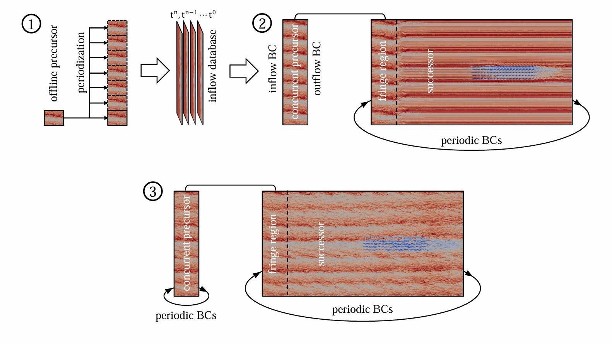

Precursor, Fringe Regions & Damping Layers
Wind turbine wake recovery and power production are strongly influenced by background atmospheric turbulence. To prescribe a physical turbulent inflow for wind farm simulations, TOSCA supports a hybrid off-line/concurrent precursor methodology that combines the reduced compute cost of off-line (inflow-outflow) precursor techniques with the capability of the concurrent approach to suppress gravity wave-reflections.
In the classic off-line precursor–successor method, a simulation of the ABL without turbines is advanced until turbulence reaches a statistically steady state. Velocity and temperature are then saved on inflow planes at each time step, forming an inflow database that is replayed in the successor simulation. This approach works well for isolated turbine studies without thermal stratification. However, in the case of gravity waves triggered by terrain features or wind farms, inflow-outflow boundary conditions do not prevent atmospheric gravity waves from reflecting at the non-periodic domain boundaries.
When these gravity waves are present, a carefully-designed simulation must prevent them from being reflected by the domain boundaries. This requirement, combined with the need for a time-resolved turbulent inflow, motivates the concurrent-precursor approach, in which a companion domain (the concurrent precursor) is advanced in sync with the successor. In this case, damping forces in a fringe region restore the desired inflow at each time step, simultaneously absorbing outgoing waves emanating from the wind farm. Optionally, advection damping can be also applied so that spurious waves are not advected into the physical domain, interacting with the physical waves.
Hybrid Off-line / Concurrent Precursor
TOSCA exploits the flexibility of the finite-volume formulation by combining the two techniques in a three-phase procedure:
1. Off-line precursor phase: the ABL is spun up to a statistically steady state on a small off-line precursor domain whose only constraint is that the successor’s spanwise extent is an integer multiple of the off-line domain’s spanwise width. This phase can use an arbitrarily small domain dictated by the current flow physics rather than the eventual successor domain size (which is set by gravity wave physics). When turbulence is statistically steady, velocity and temperature planes are saved to an inflow database.
2. Concurrent-precursor spin-up: the concurrent-precursor and successor simulations are launched together, using inflow-outflow boundary conditions in the concurrent-precursor for one flow-through time. The off-line inflow data is periodized in the spanwise direction and extrapolated in the vertical direction to fill the concurrent-precursor inlet. To ensure that no periodic content from the off-line phase corrupts the flow above the inversion layer (where the geostrophic wind must be truly steady), the off-line precursor data at the uppermost cells is blended with a time-averaged state using hyperbolic weighting functions before injection.
3. Fully periodic concurrent-precursor: after the turbulent inflow has reached the outlet (one flow-through time), the concurrent-precursor streamwise boundary conditions are switched to periodic. From this point the precursor is self-sustained; both domains are advanced simultaneously for one successor flow-through time to develop wind-farm-induced gravity waves and turbine wakes.
Fringe Region
The successor domain uses streamwise periodic boundary conditions to avoid inlet/outlet wave reflections. A fringe (sponge) region at the upwind start of the domain damps turbine wake and wave perturbations and restores the flow to the concurrent-precursor inflow target, preventing wakes from re-entering the domain. Body forces in the fringe region are computed at each time step from the concurrent-precursor instantaneous velocity and temperature fields.
{kind=link}

Schematic of the fringe-region layout in the hybrid off-line/concurrent precursor framework. The successor domain (right) uses periodic streamwise boundary conditions, the fringe zone (shaded) at the downstream end restores the flow to the concurrent-precursor target and absorbs turbine-wake and gravity-wave perturbations.
Rayleigh Damping and Advection Damping
To suppress wave reflections from the upper boundary, a Rayleigh damping layer is applied in the upper portion of the domain. The dominant vertical wavelength of atmospheric gravity waves is estimated as \(\lambda_z = 2\pi G/N\), where \(G\) is the geostrophic wind speed and \(N\) is the Brunt–Väisälä frequency. The Rayleigh damping layer should be designed to contain at least one full vertical wavelength.
For subcritical capping-inversion Froude numbers (\(Fr < 1\)), where interfacial waves can propagate against the flow and interact with fringe-generated disturbances, the advection-damping technique of Lanzilao and Meyers (2022) is applied in a region downstream of the fringe exit. This technique suppresses the horizontal advection of vertical velocity fluctuations in the damping region, preventing spurious wave interactions from being advected into the physical domain.